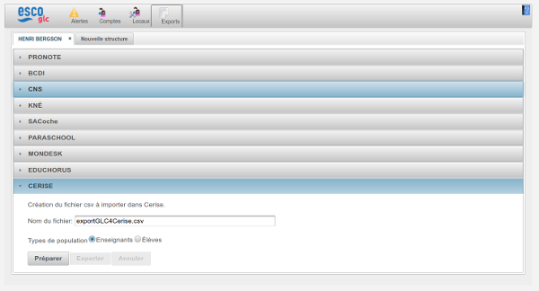

Le raccordement de CPro STI/Cerise Pro consiste en la mise en place d’un connecteur permettant d’établir une correspondance entre un utilisateur de
l’ENT et un utilisateur de l’application. Cette correspondance va se faire en stockant dans la base de données de l’application
l'identifiant ENT de l'utilisateur.
Conformément au SDET, l’ENT ne fournira aucune information personnelle dans le ticket CAS,
ce qui implique que pour effectuer le rapprochement de tous les comptes (ENT ↔ Application), il est nécessaire
de passer par l’importation d’un fichier CSV en plus des traditionnels fichiers XML issus de STS_EMP et de SIECLE.
Ce fichier CSV est mis à disposition des établissements par l’ENT et sera importé via la même interface d’import que les
fichiers XML (les fichiers XML, puis les fichiers CSV).
Étape 1 : une personne autorisée à réaliser des exports dans la Gestion des Comptes ENT extrait un fichier formaté pour CPro.
Étape 2 : l'outil de Gestion des Comptes ENT constitue la liste des utilisateurs demandés.
Étape 3 : la personne qui a demandé la liste reçoit le fichier au format CSV.
Étape 4 : l'administrateur CPro importe dans CPro le fichier CSV pour réaliser le rapprochement des comptes.
L'administrateur demande l'extraction des informations concernant les élèves d'une part et les enseignants d'autre part :
Pour réaliser ces extractions, l'administrateur choisit le type de population désiré, clique sur le bouton "Préparer" puis sur le bouton "Exporter" pour récupérer le fichier.
La correspondance entre un compte Cpro et un comptes ENT ne peut se faire que si celle-ci est unique. En cas de doublon, il sera nécessaire d'intervenir manuellement.
Pour les établissements qui souhaitent mettre en place le connecteur, voici les actions à réaliser :
Une fois le connecteur mis en place, l'administrateur ENT peuple le groupe Cerise Pro (Applications:Cerise Pro:Établissement) et/ou le groupe Cerise Pro STI (Applications:Cerise Pro STI:Établissement) avec les populations concernées.